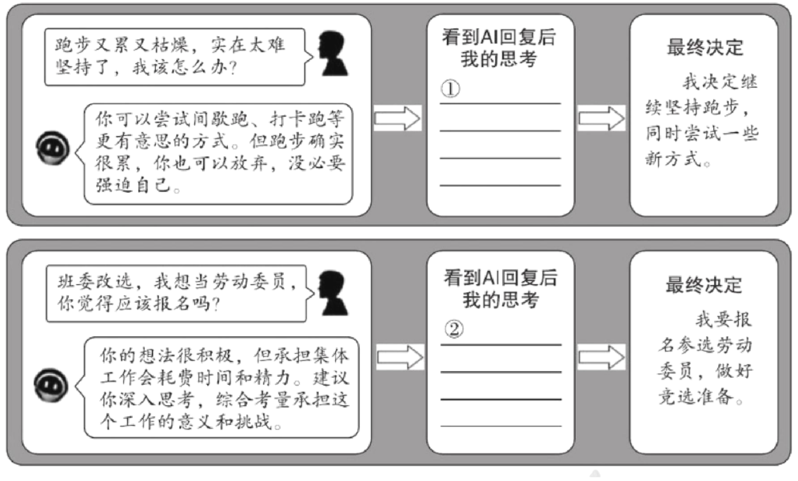

2026年北京市中考道德与法治真题 原卷解析
2026年北京市中考道德与法治真题
（满分70分，考试时间70分钟）
第一部分
一、判断题（共10题，每题1分，共10分。正确的在括号里写“正确”，错误的在括号里写“错误”）
1. 中国共产党的领导是中国特色社会主义最本质的特征。（ ）
【答案】正确
【解析】
【详解】宪法规定，中国共产党的领导是中国特色社会主义最本质的特征，是中国特色社会主义制度的最大优势。
2. 党的十八大以来，中国特色社会主义进入新时代。（ ）
【答案】正确
【解析】
【详解】党的十八大以来，党和国家事业取得了历史性成就、发生了历史性变革，标志着中国特色社会主义进入新时代。
3. 我国是人民民主专政的社会主义国家，国家的一切权力属于人民。（ ）
【答案】正确
【解析】
【详解】本题考查宪法的基本原则。依据教材知识可知，我国是人民民主专政的社会主义国家，国家的一切权力属于人民。故正确。
4. 人民代表大会制度是我国的根本政治制度。（ ）
【答案】正确
【解析】
【详解】我国宪法规定，人民代表大会制度是我国的根本政治制度，是人民掌握国家政权、行使权力的根本途径。
5. 维护国家统一，反对分裂，是爱国主义精神的具体体现，是每个公民义不容辞的责任。（ ）
【答案】正确
【解析】
【详解】维护国家统一，反对分裂，是爱国主义精神的具体体现，是每个公民义不容辞的责任。我们绝不容忍国家分裂的历史悲剧重演，一切分裂祖国的活动都必将遭到全体中国人坚决反对。所以题文中的观点正确。
6. 我国公民享有广泛的权利，公民在行使权利时不受任何限制（ ）
【答案】错误
【解析】
【详解】公民行使权利不能超越它本身的界限，不得损害国家的、社会的、集体的利益和其他公民的合法的自由和权利，要在法律允许的范围内行使权利。
7. 税收是国家财政收入的主要来源，依法纳税是公民的一项基本义务。（ ）
【答案】正确
【解析】
【详解】本题主要考查对税收的认识。税收是国家(政府)公共财政最主要的收入形式和来源。税收的本质是国家为满足社会公共需要，凭借公共权力，按照法律所规定的标准和程序，参与国民收入分配，强制取得财政收入所形成的一种特殊分配关系。而且我国宪法规定，依法纳税是公民的一项基本义务，所以题文的表述是正确的。
8. “己所不欲，勿施于人”告诉我们要学会换位思考（ ）
【答案】正确
【解析】
【详解】“己所不欲，勿施于人”意为自己不喜欢的事情，不要强加给别人，这要求我们设身处地为他人着想，学会换位思考。
9. 情绪是短暂的、不稳定的，我们无法调节自己的情绪。（ ）
【答案】错误
【解析】
【详解】情绪是短暂的、不稳定的，但情绪是可以调节的，我们可以通过改变认知评价、转移注意、合理宣泄和放松训练等方法调节情绪。
10. 积极参加学校组织的应急疏散演练，有助于提高我们的安全防范能力。（ ）
【答案】正确
【解析】
【详解】积极参加应急疏散演练能够帮助我们掌握基本的逃生自救技能，增强安全意识，从而有效提高安全防范能力。
二、选择题（共10题，每题2分，共20分。在每题列出的四个选项中，选出最符合题目要求的一项）
11. 2026年5月25日，神舟二十三号航天员乘组顺利进驻中国空间站。中国空间站首次迎来________，这是“一国两制”成功实践的生动例证，生动彰显“一国两制”的显著制度优势和强大生命力。（ ）
A. 来自香港的航天员B. 航天员“太空会师”
C. 太空授课D. 与货运飞船对接
【答案】A
【解析】
【详解】时政题，解析略。
12. 同学们制作了心语卡。下列对这张卡片的寓意理解最恰当的是（ ）

A. 展示优势与特长，只追求外在美
B. 以自我利益为中心，不断增强自控力
C. 学会欣赏他人，照搬他人经验
D. 不断努力，做更好的自己
【答案】D
【解析】
【详解】A：我们既要追求外在美也要注重内在美，“只追求外在美”说法错误，且和卡片成长的寓意无关，故A说法错误；
B：“以自我利益为中心”是自私自利的错误价值导向，与卡片传递的积极成长的寓意不符，故B说法错误；
C：我们要结合自身实际借鉴他人经验，“照搬他人经验”的说法错误，且卡片未体现欣赏他人、借鉴他人经验的内容，故C说法错误；
D：卡片中“向上开花是成长，向下扎根也是成长”说明成长是多维度的自我提升，寓意我们要不断努力，实现自我发展，做更好的自己，故D说法正确；
13. 临近毕业，回想初中生活，很多人在“我”生命中留下“痕迹”。
◇好朋友在纸上留下的讲解笔记；同学录上写下的未来约定…… ◇妈妈教会我做的第一道菜；爸爸在成长仪式上写给我的鼓励话语…… ◇老师推荐给我的一本本书；班主任在我迷茫时的一句句点拨…… |
这些“痕迹”共同指引“我”（ ）
①教书育人，恪尽职守 ②珍视情谊，健康成长
③心怀感恩，传递美好 ④尊重师长，言听计从
A. ①②B. ①④C. ②③D. ③④
【答案】C
【解析】
【详解】①：教书育人、恪尽职守是教师的职业道德和要求，不是对学生“我”的指引，故①不符合题意；
②：朋友的笔记和约定体现珍贵情谊，父母老师的帮助促进“我”健康成长，故②符合题意；
③：面对朋友、父母和老师的关爱与帮助，“我”应心怀感恩并将这份美好传递下去，故③符合题意；
④：尊重师长是正确的，但“言听计从”意味着盲目服从，缺乏独立思考，不符合现代成长理念，故④说法错误；
14. “真正的强者不是一直赢，而是在失败中不倒下，在风雨中找到前行的路。”这句话告诉我们（ ）
A. 防患于未然，远离不良行为
B. 学会自立自强，拒绝接受他人的帮助
C. 时刻保持乐观，杜绝负面情绪
D. 学会面对逆境，将挫折转化为成长的助力
【答案】D
【解析】
【详解】A：题干强调的是面对失败和风雨的态度，未涉及预防不良行为，故A说法不符合题意；
B：自立自强并不意味着拒绝他人的帮助，善于求助也是强者的表现，故B说法错误；
C：负面情绪无法完全杜绝，我们需要学会调节情绪，故C说法错误；
D：题干名言强调了在失败和风雨中坚持前行，体现了面对逆境、战胜挫折的精神，故D说法符合题意；
15. 餐厅老板发现一位连续多年几乎每天都点外卖的顾客，多日没有下单。虽素未谋面，但出于担心，希望联系对方确认平安。这位顾客得知这份来自陌生人的挂念时，感动不已。餐厅老板的行为体现了（ ）
A. 真诚待人，珍惜诚信记录
B. 坚守原则，捍卫公平正义
C. 心存善意，主动关心他人
D. 依法求助，维护合法权益
【答案】C
【解析】
【详解】A：题干中餐厅老板的行为主要体现对他人的关心，未涉及诚信记录相关内容，故A不符合题意；
B：题干情境属于人际关怀，未涉及坚守原则或捍卫公平正义的问题，故B不符合题意；
C：餐厅老板因担心陌生顾客平安而主动联系，体现了心存善意、主动关心他人的美好品质，故C符合题意；
D：题干中未涉及合法权益受损及依法求助的情形，故D不符合题意。
16. 在走向未来的征程中，我们应该做好职业准备。
在实习过程中，我尝试了算法工程师等四份不同领域的工作。“跨界追梦”让我找到了自己真正热爱的事业，也让我懂得了每一份工作都应该全力以赴、认真对待。 | 我是茶乡人，从小就喜欢茶叶。考取茶艺师资格证书后，我在直播间讲解推荐家乡的茶叶，用自己擅长的方式助力乡村振兴。 |
从上述人物的经历中，可以看出（ ）
①现代社会，丰富多彩的职业为我们提供了多样化的选择
②不论在哪个工作岗位，都要尽职尽责、辛勤劳动
③职业选择要考虑兴趣爱好，我们要频繁更换工作
④走上工作岗位，意味着人生价值的实现
A. ①②B. ①③C. ②④D. ③④
【答案】A
【解析】
【详解】①：材料中人物尝试了不同领域的工作以及利用特长助力乡村振兴，体现了现代社会职业丰富多彩，为我们提供了多样化的选择，故①说法符合题意；
②：材料中提到“每一份工作都应该全力以赴、认真对待”，体现了不论在哪个工作岗位，都要尽职尽责、辛勤劳动，故②说法符合题意；
③：职业选择要考虑兴趣爱好是正确的，但“频繁更换工作”不利于职业稳定和发展，不符合敬业精神的要求，故③说法错误；
④：走上工作岗位是实现人生价值的途径之一，但并不意味着立刻实现人生价值，人生价值需要在劳动和奉献中创造，故④说法错误。
17. 一位牧民在边境放牧时，发现两名形迹可疑的陌生人拍摄边防军事设施，马上拨打12339举报。国家安全部门迅速查清嫌疑人为境外间谍机关提供军事情报的违法事实，并将案件移交人民检察院。最终，两人被人民法院依法判处有期徒刑，受到应有的惩罚。对上述案例评论正确的是（ ）
①牧民履行了维护国家安全的义务，值得我们学习
②两人的行为危害国家安全，受到了行政处罚
③监察机关履行监察职责，化解国家安全风险
④人民检察院、人民法院以司法之力筑牢国家安全防线
A. ①③B. ①④C. ②③D. ②④
【答案】B
【解析】
【详解】①：牧民发现危害国家安全的行为及时举报，履行了维护国家安全的法定义务，故①符合题意；
④：人民检察院和人民法院依法办案、惩治犯罪，体现了以司法之力筑牢国家安全防线，故④符合题意；
②：两人被人民法院依法判处有期徒刑，属于刑事处罚，而非行政处罚，故②说法错误；
③：案例中涉及国家安全部门、人民检察院和人民法院，未体现监察机关履行监察职责，故③不符合题意。
18. 在基层党组织领导下，某社区为解决“小区充电桩问题”准备召开一场议事协商会。同学们得知后，在课堂上围绕“议事协商会参加人员”展开讨论，提出了下列人员的参加理由。其中理由阐述正确的是（ ）
序号 | 参加人员 | 理由 |
① | 居民代表 | 表达居民诉求，积极行使民主权利 |
② | 政协委员 | 能回应群众关切，制定法律法规 |
③ | 人大代表 | 由人民选举产生，要听取和反映民意 |
④ | 政府工作人员 | 是国家权力机关的组成人员，对政策更加熟悉 |
A. ①②B. ①③C. ②④D. ③④
【答案】B
【解析】
【详解】①：居民代表参与社区议事协商，有利于表达居民诉求，积极行使民主权利，故①说法正确；
②：政协委员履行政治协商、民主监督、参政议政职能，无权制定法律法规，故②说法错误；
③：人大代表由人民选举产生，代表人民利益，应听取和反映民意，故③说法正确；
④：政府工作人员属于行政机关人员，人大代表才是国家权力机关的组成人员，故④说法错误；
19. 关心国家发展，心中有“数”。一位同学分享了如下资料。
当前，我国拥有全球规模最大的教育体系，受过高等教育的人口已达2.5亿；技能劳动者总量超过2.2亿人；科学家与工程师的总体规模接近2000万人；国际专利申请量连续5年世界第一。 |
据此推断，他的分享主题应该是（ ）
A. 把握人口发展规律，积极应对老龄化
B. 强化企业科技创新主体地位
C. 教育均衡发展，完善教育立法
D. 教育科技人才一体发展
【答案】D
【解析】
【详解】A：材料数据主要反映教育、人才和科技实力，未涉及人口年龄结构及老龄化问题，故 A 说法不符合题意；
B：材料未提及企业在创新中的具体作用，故 B 说法不符合题意；
C：材料侧重展示发展规模和成果，未体现教育均衡及立法内容，故 C 说法不符合题意；
D：材料涵盖了教育体系规模（教育）、劳动者与科研人员数量（人才）、专利申请量（科技），契合教育科技人才一体发展的主题，故 D 说法符合题意；
20. 从“卖产品”到“定标准”。2025年，我国在智慧电网、传统医学、脑机接口等领域共牵头制定发布相关国际标准285项，推动中国以更开放的姿态为全球发展带来广阔机遇。这表明（ ）
①中国是全球发展的贡献者
②国际竞争的实质是国际标准的较量
③中国的国际影响力不断提升
④我国积极学习和借鉴一切外来文化
A. ①③B. ①④C. ②③D. ②④
【答案】A
【解析】
【详解】①：题干中中国牵头制定国际标准，为全球发展带来广阔机遇，体现了中国是全球发展的贡献者，故①符合题意。
②：当前国际竞争的实质是以经济和科技实力为基础的综合国力的较量，而不是国际标准的较量，故②说法错误。
③：从“卖产品”到“定标准”，牵头发布多项国际标准，彰显了中国科技实力增强和国际话语权提升，表明中国的国际影响力不断提升，故③符合题意。
④：我们要学习和借鉴外来优秀文化，而非“一切”外来文化，且题干强调的是中国贡献而非学习外来文化，故④说法错误。
第二部分
本部分共5题，共40分。
21. 空间不设限，学习不止步。聚焦“无界课堂”活动设计，同学们积极贡献智慧。
地点 | 内容 | 目的 |
公园 | 参加写生，用画笔记录自然风光，在画纸上绘出美丽的风景。 | 在与自然的对话中调节压力，丰富情感体验，充盈精神世界。 |
科学实践基地 | 参加项目式学习，分组开展科学实验，展示并分享学习成果。 | ① |
社区 | 听普法讲座，制作宪法宣传手册，向邻里讲述宪法故事。 | ② |
结合材料，运用所学，把上述活动设计补充完整。
【答案】①培养创新精神，提升科学素养；在实践中培养合作能力。
②增强宪法意识，树立法治观念；在社会生活中提升交往能力，养成亲社会行为。
【解析】
【详解】从设问可知考查参与社会实践活动的意义，需要结合材料进行关键词提炼；
到科学实践基地开展科学实验并分享学习成果，可知培养创新精神，提升科学素养和合作能力；
到社区听普法宣传，制作宪法宣传手册，讲述宪法故事等，可知增强宪法意识，提升交往能力，养成亲社会行为等。
22. 与AI对话与AI对话，决定在人手中。

（1）运用所学，写出“我”在看到AI的回复后会有怎样的思考，才做出最终的决定。
（2）完成上述任务后，你有什么启示？
【答案】（1）①我仔细想一想跑步还是非常有意义的，既能锻炼身体，也能培养坚韧意志。AI说的间歇跑、打卡跑，可能还挺有趣，我可以试一试。
②劳动委员的工作的确会耗费时间和精力，但集体事务需要每个人分担，我愿意为集体多出力，而且我能在这个工作中提升劳动等综合技能，得到更多锻炼。
（2）理性对待AI，正确对待他人建议，学会独立思考等。
【解析】
【小问1详解】
从设问中可知要考查自强、建设美好集体、集体的作用的知识，需要对材料内容进行关键词提炼；
我决定继续坚持跑步，同时尝试一些新方式，可知既能锻炼身体，也能培养坚韧意志；
我要报名参选劳动委员，做好竞选准备，可知集体事务需要每个人分担，而且在工作中可以提升技能，得到更多锻炼。
【小问2详解】
从设问中可知要考查合理利用网络的知识，需要对材料内容进行关键词提炼；
AI针对跑步和班委改选分别给出了建议，“我”思考后进行了自主的选择，可知理性对待AI，学会独立思考。
23. 在新修订的《北京市非机动车管理条例》实施即将满一个月之际，北京市政府相关部门发布了一封感谢信。以下是感谢信（节选）及部分网友的留言。
亲爱的市民朋友们： 自2026年5月1日新修订的《北京市非机动车管理条例》正式施行以来，在广大市民朋友的支持配合下，全市驾乘电动自行车佩戴头盔已蔚然成风，自觉规范佩戴安全头盔、文明守法骑行渐成首都文明新风尚。让我们携手同心，共建首都安全、有序、文明、和谐的道路交通环境。向理解、支持、践行文明守法骑行的市民朋友们表示衷心感谢!愿平安常伴君行，文明永驻心间。 2026年5月29日 |
| 网友1 这封信好温暖，也感谢政府倡导文明新风尚。政府、社会的宣传活动，让我知道了戴头盔是法定义务。只有遵守规则，交通才会安全通畅。 |
| 网友2 个别没戴头盔的人，交警会拦下他们耐心劝导，该罚的也不含糊，做得太到位了。 |
| 网友3 生命安全是我们的切身利益。当初，该条例修订草案在网上征求意见，我积极建言献策；如今，我要从自身做起，带动更多人遵守该条例。 |
| 网友4 佩戴头盔蔚然成风，北京是怎么做到的？ |
结合材料，运用所学，请你回复“网友4”的问题。（80字左右）
【答案】示例：北京做得确实好！佩戴头盔蔚然成风，是政府、社会和市民共同努力的结果。该条例修订时公开征求意见，充分听取市民建议，有利于保障市民安全；政府全心全意为人民服务，在该条例落实时，交警严格执法、温情执法；全社会践行社会主义核心价值观，文明程度不断提高，形成社会合力；广大市民尊法学法，内化于心，自觉履行义务。文明守法，从我做起。
【解析】
【详解】设问要求回答北京市是如何做到佩戴头盔蔚然成风的，需要结合材料进行关键词提炼；
北京市政府相关部门发布了一封感谢信，可知是政府、社会和市民共同努力的结果；
政府、社会的宣传活动，让我知道了戴头盔是法定义务，可知广大市民尊法学法，内化于心，自觉履行义务；
个别没戴头盔的人，交警会拦下他们耐心劝导，该罚的也不含糊，可知交警严格执法、温情执法；
该条例修订草案在网上征求意见，我积极建言献策，可知充分听取市民建议，有利于保障市民安全；
我要从自身做起，带动更多人遵守该条例，可知全社会践行社会主义核心价值观，文明程度不断提高。
24. “城市礼物”承载着一个地区的发展成就和时代精神。“十五五”开局之年，各地纷纷向祖国献出自己的“城市礼物”。
“京”彩智能 半程马拉松比赛在北京鸣枪开跑，人形机器人超越人类纪录；智慧餐厅里，机器人服务员往来穿梭、配合默契；流水线上，工业机器人动作灵活，几十秒下线一辆新车；具身智能超级工厂辐射京津冀地区……瞄准打造“全球人工智能第一城”，北京正加速行动。 | |
| 东莞潮玩 东莞“潮”涌，澎湃世界。各式各样的潮流玩具从东莞走向100多个国家和地区。从代工到原创，精于制造、引领潮流，东莞已成为“中国潮玩之都”。东莞潮玩以传统文化、时尚创意为两翼，向着全球高端市场腾飞，“圈粉”全球。 |
戈壁风车 在新疆，一排排百米高的风机拔地而起，巨大的叶片缓缓转动，切割着戈壁上的猎猎长风。各族人民共同奋战，相关产业相继落地，绿色电力源源不断，不仅点亮了中东部地区的万家灯火，更深刻改变了新疆当地的面貌。风车转动铺就幸福之路。 | |
| 超级足球 “东北超”来了，欢天喜地地来了。绿茵场上，球员来自各行各业，他们用激情和汗水踢出了生活的热辣滚烫。绿茵场外，足球主题市集、文创展销纷纷出现，市民和游客共度这场城市的欢乐节。“东北超”为东北地区发展注入强劲新动能。 |
“城市礼物”是区域魅力的体现，更是祖国发展的注脚。结合材料，运用所学，完成对“城市礼物”的魅力解码报告。
魅力解码报告 第一步：从国家发展视角，再补充两个解码“城市礼物”魅力的维度。 |
【答案】 ①. 对外开放 ②. 区域协调发展 ③. 北京的机器人、戈壁风车科技范儿十足，都展现了国家在科技创新方面取得的重大成果。东莞潮玩“圈粉”全球，走向100多个国家和地区，是我国对外开放的生动实践。新疆风车输出绿电，点亮中东部地区的万家灯火；超级足球为东北地区发展注入强劲新动能，共同绘就我国区域协调发展新画卷。我对祖国发展成就感到骄傲和自豪，对祖国未来发展充满信心。
【解析】
【详解】小问1：设问要求补充两个解码“城市礼物”魅力的维度，需要结合材料进行关键词提炼；
东莞“潮”涌，澎湃世界，可知对外开放；
绿色电力源源不断，点亮了中东部地区的万家灯火，可知区域协调发展。
小问2：设问要求对“城市礼物”的魅力进行分析，需要结合材料进行关键词提炼；
瞄准打造“全球人工智能第一城”，可知都展现了国家在科技创新方面取得的重大成果；
向着全球高端市场腾飞，“圈粉”全球，可知我国对外开放的生动实践；
点亮了中东部地区的万家灯火，“东北超”为东北地区发展注入强劲新动能，可知共同绘就我国区域协调发展新画卷。
25. 完成剧本一代人有一代人的使命，一棒有一棒的责任。某学校戏剧社团准备以“接力”为主题编演情景剧，下面是他们正在创作的剧本。
第一幕 从雪山草地到碧海长空 背景：长征，雪山、草地 红军战士：穿上草鞋跟党走，刀山火海不回头。我们怀着坚定的革命信念，爬雪山、过草地，万水千山只等闲。 背景：抗美援朝战场 志愿军战士：面对武装到牙齿的敌人，我们毫不畏惧，打出了军威、打出了国威，用血肉之躯拼来了山河无恙、家国安宁。 背景：航空母舰，舰载机起飞 舰载机飞行员：劈波斩浪，砺剑深蓝；战鹰展翼，劲舞海天。我牢记党和人民的嘱托，驾驶国产新型战机凌空而起，心中充满了自豪与力量。 画外音1：____________________________________________ 第二幕 从梨园国粹到美美与共 背景：老戏园 师父（对正在排练的徒弟）：戏大于天！唱念做打，皆有讲究；孝悌忠信，都在戏里。唱戏就要有唱戏的样子，前辈们留下的好东西，咱们可不能给弄丢了。 背景：“京剧电影工程”系列剧目的剧照 导演：原汁原味的身段唱腔，融入电影灵活幻化的时空场景，让观众获得更丰富的审美体验，数字影像还可以把这些艺术瑰宝永久保存下来。 背景：海外剧院，京剧演出 青年京剧演员：我们新时代的京剧人不断拓宽传播路径，打造多语种版本、开发文创产品、设计体验活动，让国粹走出国门，走向世界。五洲同唱结戏缘。 画外音2：____________________________________________ 第三幕 这一棒我上场 背景：学校全貌，展示“承担时代使命跑好历史接力赛”横幅 一群青春洋溢的中学生手持接力棒跑上舞台。 学生齐声（铿锵有力地）：____________________________________________ |
※注：本剧中的画外音是指用一段话提炼剧情主旨，引导观众理解作品思想。
运用所学，完成剧本内容。
【答案】示例：
画外音1：中国共产党团结带领中国人民不懈奋斗，书写了气壮山河的恢宏史诗。人民军队永葆对党的赤胆忠心，发扬伟大民族精神，坚持国家利益至上，永远做人民利益的捍卫者。红色基因代代相传。
画外音2：中华文化源远流长、博大精深。几代京剧人积极传承、弘扬中华优秀传统文化，勤恳敬业、守正创新，讲好中国故事，坚定文化自信。中华文化影响力不断增强。
学生齐声：百年接力，强国有我。我们要听党话、跟党走，接续奋斗，为实现中华民族伟大复兴贡献青春力量！
【解析】
【详解】从设问中可知，要考查运用所学，完成剧本内容，需要对材料内容进行关键词提炼。
长征的胜利、抗美援朝战场毫不畏惧、航空母舰，舰载机起飞，可联系中国共产党团结带领中国人民不懈奋斗，坚持国家利益至上，红色基因代代相传；
孝悌忠信，都在戏里，可联系中华文化特点；
原汁原味的身段唱腔，融入电影灵活幻化的时空场景，可联系守正创新，坚定文化自信；
让国粹走出国门，走向世界，可联系中华文化影响力不断增强；
承担时代使命跑好历史接力赛，可联系听党话、跟党走，接续奋斗等。